Overview of Workshop
Welcome to Advanced Regression Analysis with R. Our aim is to build on your existing knowledge of regression to fit more complex models that can handle more complicated data sets. In this session you will learn about different types of regression analysis, when to use them and how to interpret the results.
By the end of the session you will be able to :
- Use regression answer to answer a wide range of research questions .
- Be able to fit a regression model with interactions between predictor variables.
- Be able to fit multi-level regression models
- Be able to extract and summarise the results from a range of regression models.
- Be able to design a regression model appropriate for addressing their specific research question.
Introduction to Coding For Reproducible Research
This workshop is offered as part of the Coding For Reproducible Research Intiative. Our ambition is to offer a recurring annual series of workshops open to all staff and students, with opportunities for novices through to more experienced users, to expand their skillsets and position them to confidently perform the informatics research projects in an efficient and reproducible way. A key objective is that the framework we put in place ensures that the workshops delivered are fit for purpose, of a consistent high standard, that delivery is sustainable in the longer term, minimises the workload burden on those who facilitate them and can adapt and expand as new training needs are identified.
Championed by and in partnership with
- Research Software Engineering group
- Institute of Data Science and Artificial Intelligence (IDSAI)
- Researcher Development (Doctoral College and ECRs)
- Reproducibility Network Institutional Leadership team
- Exeter Health Analytics Research Network
This workshop, and the others in the series, were put together by a series of working groups formed by researchers from across the University supported by Exeter’s Research Software Engineering Group. The programme and workshops are under constant evolution. We appreciate your patience as we develop and test these materials and are grateful for your feedback which is a core component of this process. We also need to maintain accurate records of how many participants we have reached, so ask you to mark your attendance on the collaborative document.
Workshop format
Today’s workshop is led by XX and supported by XX. We are all here because we are passionate about sharing our knowledge and supporting the development of our colleagues. For most of us, this is not a requirement of our current position and we are doing this at the margins of our time.
This workshop is a mixture of statistical theory (don’t panic), live demonstrations of R code and exercises for you to complete.
This is a hybrid workshop, please be aware of this, online participants we find that engagement is higher if you are willing to turn your cameras on. There will be a dedicated helper for online participants please, either raise your hand or type any questions into the chat. In person participants you are also able to use the Teams link to join the chat.
Our aim is to be responsive to the needs of the group, both in person and virtual. Therefore, think of the schedule as a guide rather than a strict timetable. We welcome questions and queries as we go along, there are helpers in the room so raise your hand if you need assistance. There is also a dedicated helper for the virtual participants so please raise your virtual hand to attract their attention. In person participants you are welcome to post questions in the Teams chat,if you find this easier than putting your hand up. This will be saved and distributed at the end of the workshop.
We would like to highlight that we have a code of conduct and by attending this workshop you are agreeing to abide by it.
Pre-requisites
This course will not include an introduction to R, or how to setup and use R or Rstudio. It is assumed you are comfortable coding in R and are familiar with:
- how to write and execute commands in the R console
- what type of variables are available in R and how to work with these
We also assume that you are comfortable with fitting in R and interpreting the output of:
- simple linear regression
- multiple linear regression with categorical, binary or continuous predictor variables
- logistic regression
If not we recommend that you consult our pre-requisite course Introductory Regression Analysis with R.
Course Notes
This tutorial contains the course notes, example code snippets plus explanations, exercises for you to try with solutions and quiz questions to test your knowledge. Attending a workshop on this topic means there are people on hand to help if you have any questions or issues with the materials. However, these have also been designed such that you should also be able to work through them independently.
You can navigate through the section using the menu on the side.
Mixed Effects Models
Why use a mixed effects model?
Standard linear regression models make the assumption that the data used to fit the model are randomly selected from the population. By randomly we mean that all pairs of samples are equally different. Another way of thinking about this is that there is no reason why knowing the outcome of one sample would make it easier for us to predict the outcome of another sample. This is not always the case, and indeed there are times when we want to use data where there are relationships between the observations or some underlying structure to the data. This might be deliberate and part of the study design e.g. family or longitudinal studies, or alternatively it may be a consequence of poor study design or unforeseen recruitment bias.
If we force a standard regression model that makes this assumption onto these type of data, we run the risk of our results being biased and the wrong conclusion being made. One work around is to filter our data so that it only contains independent samples, but this seems a bit of waste of valuable data that contains additional information that could improve the fit of our model. Instead it would be preferable to use a methodology that can appropriately model the underlying structure.
Multi-level models are designed to deal with nested, grouped, clustered or hierarchical data. These are all synonyms for the same concept that the observations are not independent and there is some underlying structure to the data. This structure may be something you are interested in or just something you want to control for. In genral multi-level models can be considered a more complex regression framework to model:
- structure within data
- e.g. patients recruited by different consultants from different clinics across the UK
- heterogeneity in variance between groups
- e.g. post-code specific effects on risk factors for disease
- individual-level and group-level effects
- e.g. weight influenced by genetics and local access to gyms
- dependencies between observations
- e.g. educational attainment at age 18 influenced by educational attainment at age 12
They are also referred to as mixed effects model, hierarchical linear models, random effects models, random coefficients models, and probably other names.
What is a mixed effects model?
Standard linear regression models, such as the example below, have one level, and can be referred to as single level regression models, whereby all the data is treated as independent observations.
The formula for a standard linear regression model between two variables can be written as:
\[y_{i} = \beta_{0} + \beta_{1}x_{i} + \varepsilon_{i}\]
Where for observation i:
- \(y_{i}\) is the outcome variable
- \(x_{i}\) is the predictor variable
- \(\beta_{0}\) is the intercept
- \(\beta_{1}\) is the slope coefficient for X
- \(\varepsilon \sim N(0,\sigma^2)\) is the error
Critically all the parameters (\(\beta_{0}\), \(\beta_{1}\)) estimated for this model apply to all observations in the sample. There is a single intercept, and single slope coefficient for each predictor variable, and consequently, a single error term. In order to model structure in our data set, whereby some observations get treated differently, we need to expand this formula and introduce new parameters to represent this grouping effect. We use the variance components model, shown below, to include a group level influence:
\[\beta_{0j} = \beta_{0} + u_{0j}\]
where for observation i, in group j:
- \(\beta_{0j}\) represents the mean intercept for group j
- \(\beta_{0}\) is the overall mean
- \(u_{0j} \sim N(0, \sigma_{u}^2\) is the moderator effect for group j
A multi-level model is the combination of both the single level regression model and variance components model. It can be represented as the two equations above, where each equation represents a different level of the data, i.e. one representing the individual level predictors (level 1) and one representing the group level predictors (level 2). Alternatively, we can write as a single equation, by substituting the level 2 equation into the level 1 equation:
\[y_{ij} = \beta_{0} + u_{0j} + \beta_{1}x_{ij} + \varepsilon_{ij}\]
From this formula we can see that each group \(j\) has it’s own intercept value (\(\beta_{0} + u_{0j}\)) but every observation has the same slope coefficient (\(\beta_{1}\)). We call this a random intercepts model.
What are fixed and random effects?
Typically when defining or describing to mixed effects models, we consider them to include both fixed and random effects, where variables are assigned to be modeled as either one or the other. Fixed effects assume that the parameter estimates apply to all our observations (i.e. do not depend on j) and we estimate the value of the regression parameters for each variable. The interpretation of these estimated coefficients is as it was in single level regression models.
Instead for variables classified as having random effects, we are assuming that each group within that variable has it’s own effect and that across all the groups the distribution of their effects is normal. For random effects we are interested in estimating the variance of the distribution from which the group effects come. Conceptually random effects must be categorical variables.
For a mixed effects model with one fixed effect and one random effect we have four parameters to estimate using our observed data:
- \(\beta_{0}\) (fixed effect)
- \(\beta_{1}\) (fixed effect)
- \(\sigma^{2}_{u}\) (random effect)
- \(\sigma^{2}_{\varepsilon}\) (random effect)
Fitting mixed effects models in R
The dataset
To enable us to try out some multilevel regression models we have
provided some longitudinal data looking at cognitive performance
annually for an intervention study. All individuals have multiple
entries capturing data collected at different assessments over time. For
each individual we have a unique identifier code (ID). We
have the individual’s sex, smoking status, intervention status and years
education. We then have a series of columns for the visit data, which
includes scores from various cognitive tests CognitionA,
CognitionB, etc as well their age at the time of assessment
and physical or mental well being. We can use the table()
function to tabulate how many visits each individual had, and then the
summary() and hist() functions to calculate
some descriptive statistics and plot a histogram of these data.
nVisit<-table(cogDat$ID)
summary(as.numeric(nVisit))## Min. 1st Qu. Median Mean 3rd Qu. Max.
## 1.000 3.000 4.000 4.234 5.000 11.000hist(nVisit, main = "", xlab = "nVisits", ylab = "nIndividuals", breaks = c(0:max(nVisit)))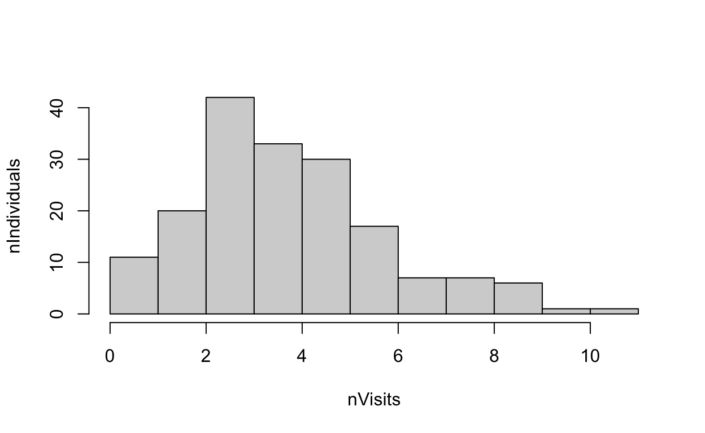
We can see that the majority of individuals had more than one visit, with a mean of 4.23 and a maximum of 11 visits.
Given we have multiple observations from the same person we can not use standard regression models and instead we need to use a mixed effects model, as it is likely that an individual’s performance at one visit will predict their performance at a second visit.
The functions to fit a multi-level model are not provided with the
standard installation of R so we need to install a package which
contains the functions we need. Packages are the fundamental units of
reproducible R code and are the mechanism to increase R’s usability.
They include reusable R functions, the documentation that describes how
to use them, and optionally sample data and tutorials. The package we
will use here is called lme4. First we will cover how to
install and load a package.
Installing and loading packages
There are a number of places R packages can be downloaded from (NB
not all packages are available in all locations so the package itself
will dictate which method you use to install it). Many older packages
are stored on CRAN[https://cran.r-project.org/web/packages/]. R provides a
function to download such packages install.packages() where
the name of the package is provided as an argument. Multiple packages
can be provided as a vector using the c() function. The
lme4 package we are interested in, can be installed in this way.
install.packages("lme4")Alternatively in Rstudio, this can be achieved through the drop-down menus: Tools -> Install Packages… -> and the package name can be entered (Figure 1). The end of this document contains additional notes on other ways to install packages.

You may get a pop-up window asking you to choose a mirror (this is
not overly important but logical to choose a local UK based mirror).
When you install a package some text may be printed to the console, some
of which won’t be in plain English or easily understandable. You may get
a warning say cannot write to the default library directory and R will
suggest an alternative which you can choose to accept. Ultimately you
should get a message saying
package 'lme4' successfully unpacked and MD5 sums checked
indicating the installation has worked, it should also tell you where it
has installed the package. This information is not important, as it will
automatically install it where R can find it, and you shouldn’t need to
to look at these files. Packages typically build on functionality from
other packages and cannot be successfully installed if any packages it
depends on are not installed on your system. By default these should be
automatically installed along with the package you want. However errors
may arise if the packages are hosted in different places and therefore
cannot all be installed using the same command. See the end of this
document for other methods to install packages from other
repositories.
Once we have installed the package we need to load it. As with all other software you install on a computer, it only needs to be installed once and in future R sessions you just need to load the package as follows. The caveat here is if you update the version of R you are using, as the packages are saved in folders relating to the version of R you are using.
library("lme4")## Loading required package: MatrixFrom the output you can see that it automatically loads any other packages it is dependent on, in this case the Matrix package.
All packages hosted on CRAN come with a webpage which provides a
description of what the package does, details on the version number, who
wrote the package and other useful information. All packages also come
with a manual which documents all the functions the package contains and
some will also have vignettes providing an annotated typical workflow
for using the package. These are put together by the package authors and
therefore can be variable in how accessible the language is and useful
the information is for users. Links to the manual and vignette can be
accessed through the package’s webpage. The documentation for each
function can also be accessed through the help function in R. To fit a
mixed effects model we will use the function lmer, but
before we use it let’s see what the help function has to say about
it.
help(lmer)You may need to update the package in the future.
update.packages() can be run to update all packages on your
system. Note that every time you update your version of R, you will
likely need to reinstall all your packages.
Coding a mixed effects model
We are going to model how the performance in cognitive test A, varies over the course of the study. As we have repeated measures for most individuals in our study, we are going to include a random intercept for individual. This means that each individual can have a different baseline performance, and we can look for a common trend in the change in cognitive performance. The key features of our model are
CognitionAis our outcome or dependent variable.VisitNumis the independent variable that captures time in the study. This will be modelled as a fixed effect and is what we are interested in measuring the effect of.IDis our random effect, i.e. the variable which groups assessment data from the same individual together.
We can tell R to fit this model as follows using the
lmer() function.
model.rand.int<-lmer(CognitionA ~ VisitNum + (1 | ID), data = cogDat)Fixed effects are included using the standard formula notation as
used in linear regression models andthe function lm(), with
the outcome variable on the left and the predictor on the right
separated by a ~. The 1| notation is how we
specify the inclusion of random intercepts. Unlike standard linear
regression, there are choices to be made as to what algorithm to use to
derive the parameter estimates from the data you have. This decision is
more important if you have a small sample size, in larger sample sizes
it shouldn’t matter too much. The default behaviour in R is to fit a
mixed effects regression model using restricted maximum likelihood
(REML), which will given unbiased estimates. We can force R to use
maximum likelihood by adding the argument REML = FALSE.
Significance testing in mixed effects regression models
We can extract the statistics in a similar manner to linear
regression. First, we can use summary() to print a nicely
formatted output of some of the results and statistics to the
console.
summary(model.rand.int)## Linear mixed model fit by REML ['lmerMod']
## Formula: CognitionA ~ VisitNum + (1 | ID)
## Data: cogDat
##
## REML criterion at convergence: 1071.9
##
## Scaled residuals:
## Min 1Q Median 3Q Max
## -2.78206 -0.63222 -0.05549 0.57083 2.69895
##
## Random effects:
## Groups Name Variance Std.Dev.
## ID (Intercept) 21.19 4.603
## Residual 3.67 1.916
## Number of obs: 221, groups: ID, 49
##
## Fixed effects:
## Estimate Std. Error t value
## (Intercept) 22.44699 0.70677 31.760
## VisitNum 0.32767 0.07793 4.205
##
## Correlation of Fixed Effects:
## (Intr)
## VisitNum -0.306The output is similar to that from a linear regression model, fitted
with lm(). It starts with a statement of what type of model
and the form of the model fitted. It then gives a summary of the
algorithm used to estimate the effects. We have a summary of the scaled
residuals (errors), the random effects and fixed effects.
You may have noticed that there are no p-values in the fixed effects co-efficients table. Significance testing in mixed effects models is not as straight forward as it is for linear regression. Our objective for significance testing of the fixed effects is the same as for standard regression, to see if there is a relationship between the predictor variable and the outcome. We do this by seeing if the data supports the alternative hypothesis that the regression parameter is non-zero (compared to the null hypothesis that it’s value is equal to 0). As they are conceptually the same, test statistics for fixed effects can be calculated in the same way as the estimated value of the parameter divided by it’s standard error. To go from a test statistic to a p value we need to know what distribution to use and this is where it gets tricky. The challenge is that it is not obvious what distribution these test statistics should follow, and how many degrees of freedom should be applied. It could be influenced by
- Number of observations (level 1)
- Number of groups (level 2)
- Number of random effects
- Combination of the above.
So to determine significance we either need to make an approximation
for the degrees of freedom or a perform simulations to establish a
distribution which we can use to calculate a p-value. There are methods
that have been proposed to calculate approximations for the degrees of
freedom (e.g. Kenward-Roger, Satterthwaite) such that the t-distribution
can be used in a manner similar to standard regression analysis.
Crucially though there is no widely accepted method for calculating
degrees of freedom exists. The lme4 package does not
calculate p-values for the coefficients on principle see
discussion.
However, for many this is not a satisfactory conclusion, so a second
package lmerTest has been developed, which if loaded
alongside lme4, adds p-values to the above table. It is worthwhile
noting that, there are multiple methods to calculate p-values, and that
might introduce some variation in results across software. More
importantly the different methods are based on different assumptions and
therefore may introduce misleading results if these are not appropriate
for your data set.
To use the lmerTest functionality, as before we need to
install and load this package.
#install.packages("lmerTest")
library(lmerTest)##
## Attaching package: 'lmerTest'## The following object is masked from 'package:lme4':
##
## lmer## The following object is masked from 'package:stats':
##
## stepWe then have to refit our mixed effects model for the p-values to be calculated.
model.rand.int<-lmer(CognitionA ~ VisitNum + (1 | ID), data = cogDat)
summary(model.rand.int)## Linear mixed model fit by REML. t-tests use Satterthwaite's method [
## lmerModLmerTest]
## Formula: CognitionA ~ VisitNum + (1 | ID)
## Data: cogDat
##
## REML criterion at convergence: 1071.9
##
## Scaled residuals:
## Min 1Q Median 3Q Max
## -2.78206 -0.63222 -0.05549 0.57083 2.69895
##
## Random effects:
## Groups Name Variance Std.Dev.
## ID (Intercept) 21.19 4.603
## Residual 3.67 1.916
## Number of obs: 221, groups: ID, 49
##
## Fixed effects:
## Estimate Std. Error df t value Pr(>|t|)
## (Intercept) 22.44699 0.70677 57.28641 31.760 < 2e-16 ***
## VisitNum 0.32767 0.07793 174.71867 4.205 4.17e-05 ***
## ---
## Signif. codes: 0 '***' 0.001 '**' 0.01 '*' 0.05 '.' 0.1 ' ' 1
##
## Correlation of Fixed Effects:
## (Intr)
## VisitNum -0.306We can see from the coefficients table, that R has used the
t-distribution to calculate p-values for the fixed effects. By default
lmerTest uses the Satterwaite approximation to calculate
the degrees of freedom for this test (stated at the top of the output,
alongside the method for estimating the coefficients). In the results we
can see that the VisitNum variable is significantly
positively associated with the performance in cognitive test A (p =
4.2^{-5}). We can interpret the parameter for this variable as we would
for a standard regression model, where the value represents the change
in the outcome for one unit increase in the predictor variable, i.e. the
change in score for cognitive test A for each extra visit. Specifically,
participants had a mean increase in score of 0.33 per visit.
We can also extract information about the variables we fitted as random effects. As described above for these, we are estimating parameters of their distribution and specifically the variance of this distribution. For this model, the variance of the individual intercepts is 21.2. These are hard to attribute much meaning to, but they represent the width of the distribution that the individual effects come from. A larger number implies a wider distribution and consequently more variation in the individual effects.
We can also do significance testing of the random effects, to determine if the random intercept is needed. Just because we conceptualize that there should/might be structure in our data doesn’t mean that there is or that it’s effects are dramatic enough for us to need to model it. Given the complexities of significance testing a fixed effect in a mixed effects model, if we can get away with a simpler regression model, we should favour that.
The principle behind a random effect is that each group needs it’s own value taken from a distribution and the effects of the groups can not be represented by a single value (as they would it is was modelled as a fixed effect). Therefore, our null hypothesis (which equates to the random effects not being necessary) requires there to be no distribution of effects, which would occur if the variance of the distribution was 0. The alternative hypothesis (which equates to random effects being necessary) is that there is a distribution and it has a non-zero variance. These situations can be represented below.
\[H_{null}: \sigma_{u}^2 = 0\] \[H_{alternative}: \sigma_{u}^2 \neq 0\]
To determine whether we can reject the null hypothesis, we will use
the likelihood ratio test to see if the inclusion of the random effect
significantly improves the fit of the model. To make this comparison we
need to fit a standard linear model with the same fixed effects terms,
but omitting the random effect. We can then use the anova()
function to calculate the test statistics and perform the comparison
with the \(\chi^2_{1}\) distribution to
calculate a p-value.
model.lm<-lm(CognitionA ~ VisitNum, data = cogDat)
anova(model.rand.int, model.lm)## refitting model(s) with ML (instead of REML)You will see in the first line of the output, R first refits the random intercepts model with maximum likelihood so that we can perform the likelihood ratio test. It then proceeds to summarise the statistics of the test and provides the p-value from a \(\chi^2_{1}\) distribution, which is significant (P = 3.9^{-51}). Therefore we can conclude that the addition of a random intercept for individual is an important component of the model. Note if we want a more specific p values than 2.2e-16, we can get that by using the fact that the anova output is a matrix and “slicing” the specific element.
anova(model.rand.int, model.lm)[2,8]## refitting model(s) with ML (instead of REML)## [1] 3.894134e-51Note that there is also an inbuilt function to perform a test for
significant random effects ranova(). Let’s try it out.
ranova(model.rand.int)Looking at the output, we can see two rows, one for each model and the the number of degrees of freedom for the two models is right. If we just look at the p-value it is the same as when we manually coded the anova therefore we might think that we have performed the same analysis. But on closer inspection we can see the log likelihood values and therefore the test statistic are subtly different. This method is in fact using the likelihood statistics from the model fitted using REML, rather than maximum likelihood which is statistically incorrect. We can confirm this by extracting the log likelihood from our lmer model object (which we fitted using REML rather than ML), rather than refitting using maximum likelihood.
## log likelihood of linear model
logLik(model.lm)## 'log Lik.' -647.9563 (df=3)## log likelihood of random intercepts model fitted with REML
logLik(model.rand.int)## 'log Lik.' -535.9419 (df=4)Now in reality the results are essentially the same, and indeed they
would have been had we used ML to fit our regression model initially.
But it may be preferable to use the anova() function to
explicitly make the model comparisons, so that you can be confident that
you know exactly what methods were used.
Exercise 1
Let’s see if the other cognitive tests also change consistently over time
Write the R code required, to test using a mixed effects regression model, the following:
- Is cognitive test B significantly associated with visit number?
- Is cognitive test C significantly associated with visit number?
For each test, is the random intercept necessary?
model1<-lmer(CognitionB ~ VisitNum + (1 | ID), data = cogDat)
model1.null <- lm(CognitionB ~ VisitNum, data = cogDat)
summary(model1)
anova(model1, model1.null)
model2<-lmer(CognitionC ~ VisitNum + (1 | ID), data = cogDat)
model2.null<-lm(CognitionC ~ VisitNum, data = cogDat)
summary(model2)
anova(model2, model2.null)Extracting the results
To pull out specific parts of the output we can then use the
$ or use built in functions. We can use
names() to get a list of all the elements we can extract
from the summary object. NB with a linear regression model we extract
results using functions applied to the lm() output,(e.g
coef(model.lm)) here we apply functions to the summary
output of the lmer model
(e.g. coef(summary(model.rand.int))).
summary(model.rand.int)$coefficients## Estimate Std. Error df t value Pr(>|t|)
## (Intercept) 22.4469857 0.70677252 57.28641 31.759845 4.618074e-38
## VisitNum 0.3276723 0.07792954 174.71867 4.204726 4.167402e-05names(summary(model.rand.int))## [1] "methTitle" "objClass" "devcomp" "isLmer" "useScale"
## [6] "logLik" "family" "link" "ngrps" "coefficients"
## [11] "sigma" "vcov" "varcor" "AICtab" "call"
## [16] "residuals" "fitMsgs" "optinfo" "corrSet"For example we can extract the variance covariance matrix:
vcov(summary(model.rand.int))## 2 x 2 Matrix of class "dpoMatrix"
## (Intercept) VisitNum
## (Intercept) 0.49952739 -0.016848779
## VisitNum -0.01684878 0.006073014Graphical representation of random intercept model
When we fit a regression model we are estimating the parameters of a model we have specified that enables us to characterise the relationship between variables. One way we can understand the nature of the graph is to create a plot of it. Let’s do that here to visualise what is happening.
To plot the relationship we need to extract the estimates of the parameters of the regression model for both the fixed and random effects. Compare the output of the following two commands.
coef(summary(model.rand.int))## Estimate Std. Error df t value Pr(>|t|)
## (Intercept) 22.4469857 0.70677252 57.28641 31.759845 4.618074e-38
## VisitNum 0.3276723 0.07792954 174.71867 4.204726 4.167402e-05lapply(coef(model.rand.int), head)## $ID
## (Intercept) VisitNum
## X10130 23.42389 0.3276723
## X10478 14.22087 0.3276723
## X10622 17.58539 0.3276723
## X10933 21.45147 0.3276723
## X11684 19.71173 0.3276723
## X12621 20.03525 0.3276723The first command coef(summary(model.rand.int)) gives us
just the fixed effects along with the test statistics and p-values. From
these coefficients we can make predictions for the average individual in
the study, from which we can make generalised conclusions.
The second command coef(model.rand.int) gives us the
intercept and slope values for each level of our grouping variable, one
per row. We have only extracted this output for the first six
individuals, as otherwise it would run on for pages. This data is stored
in a list, where each random variable has it’s own slot, within which is
a matrix of the regression parameters. As we have only one random
variable we have only slot in our list, so it perhaps seems an
unnecessary complicated structure, but it is designed to anticipate
models with multiple random variables. lapply() is a
efficiency function in R which allows us to perform the same function to
each slot of the list. Here we wanted to run the command
head() to pull out the first 6 rows, so that we could make
the output more manageable and get a sense of what the output looked
like.
Note that the intercepts vary for each individual but the
coefficients for VisitNum do not. These individual level
intercept are calculated as the overall mean intercept estimate
(22.4469857) added to the estimated individual specific effects. The
slope coefficient is taken just from the fixed effect estimate. This is
in line with the fact that we fitted a random intercept model. From this
output we can make individual level predictions for the individuals in
our observed data, which doesn’t have much meaning for individuals not
in our study.
With these coefficients we can visualise the results
par(mar = c(4,4,1,1))
# extract model coefficients
ind.effects <- coef(model.rand.int)$ID
mean.effects <- coef(summary(model.rand.int))[,"Estimate"]
# create x variable that covers visit numbers
x.sample <- as.matrix(c(0:9))
# predict outcome using individual level coefficients
y.ind <- ind.effects[,1]+ t(x.sample %*% t(as.matrix(ind.effects[,2])))
# predict outcome using overal mean effect coefficients
y.mean <- mean.effects[1] + x.sample * mean.effects[2]
y_lim <-range(y.ind)
plot(x.sample, y.mean, ylim = y_lim, xlab = "Visit Number", ylab = "Cognitive Score")
for(i in 1:nrow(y.ind)){
lines(x.sample, y.ind[i,], lty = 2, col = "grey")
}
lines(x.sample, y.mean, ylim = y_lim, xlab = "Visit Number", ylab = "Cognitive Score")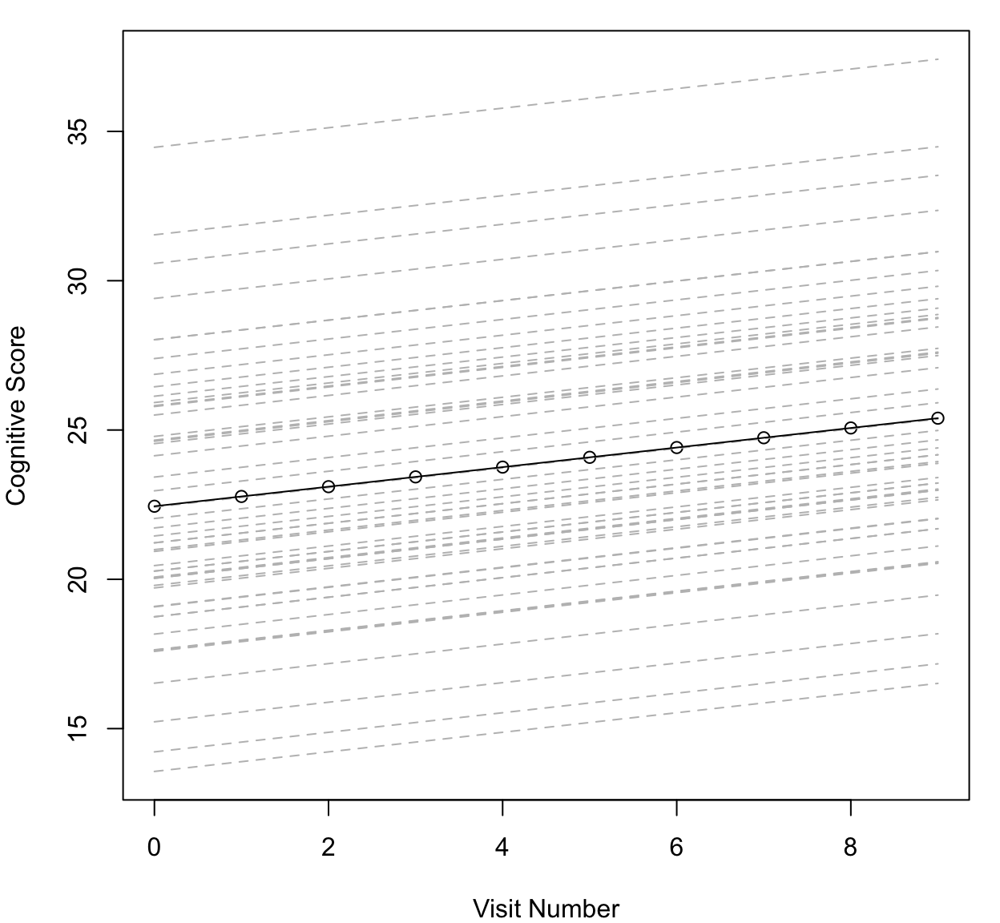
In this plot each dashed grey line represents an individual, while
the black solid line represents the overall mean effect. What we can see
is that each line starts at a different height on the y axis courtesy of
the individual specific intercepts. All the lines are parallel however.
The slope of the line is determined by the slope coefficient for
VisitNum and as this isn’t dependent on the random variable
there is no variation across individuals. Hence all the lines changes at
the same rate. The solid black line falls approximately in the middle,
with approximately half on the individual specific lines above and
below. This is due to the mean do the distribution of the individual
effects being set to 0. The black line tells us about the average
individual, and is what we would use to make predictions about an
individual outside of this cohort and describe the effect.
Assumptions for random intercept model
As with all statistical tests, the ability to calculate estimates of the parameters and perform significance testing relies of assumptions about the data you are using. For a random intercepts model these are:
- Linear relationship between predictors and outcomes.
- Constant variance across range of predictor variables (homoscedasticity).
- Errors at every level are normally distributed.
- The level 1 and level 2 residuals are uncorrelated.
- The errors at the highest level are uncorrelated.
Diagnostic plots
There is no automatic way to produce the diagnostic plots like you
can from the linear regression function (lm()). However we
can recreate these plots by extracting the required statistics from the
lmer model object.
Firstly, we can plot the residuals against the fitted values. In this plot we want the points to be randomly scattered with no evidence of a relationship between the x and y axis. Any evidence of the residuals being related to the fitted values may be indicative of a non-linear relationship between the dependent and independent variables. In this example they look pretty random with no obvious pattern.
# a plot to check the constant standard deviation
plot(fitted(model.rand.int),resid(model.rand.int,type="pearson"),col="blue", xlab = "fitted values", ylab = "residuals")
abline(h=0,lwd=2)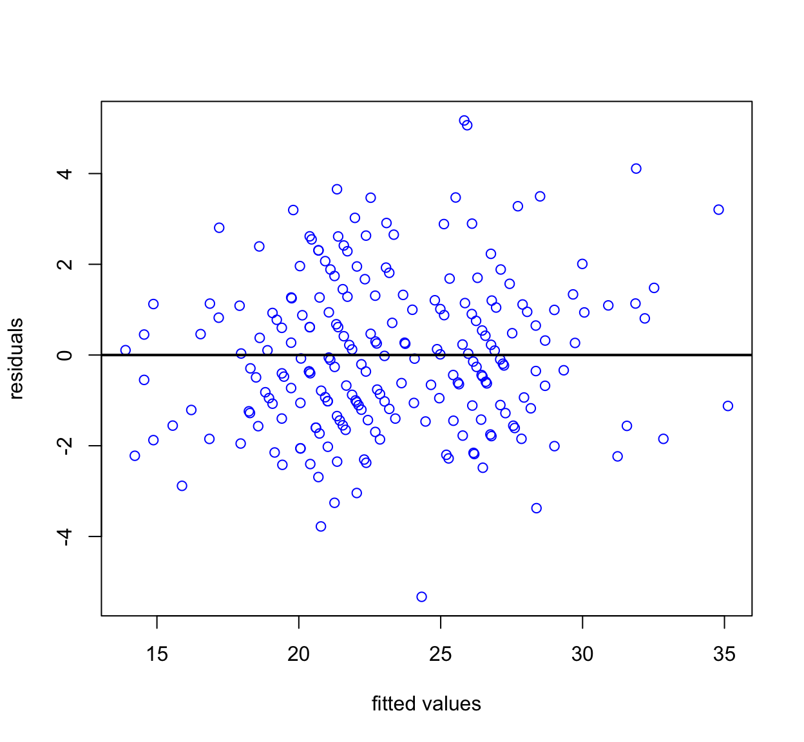
Secondly, we will consider the distribution of the residuals. Similar to linear regression, the residuals are assumed to be normally distributed with constant standard deviation. Therefore we can use a QQ plot to assess this (as well as look at the values provided in the summary of the model fit which should be symmetric and have a median ~ 0). With a qq plot (or quantile-quantile plot), we are looking for the points to follow the diagonal line, any deviation indicates that the data are not normally distributed. In this example it looks pretty good.
# normality of the residuals
qqnorm(resid(model.rand.int))
qqline(resid(model.rand.int))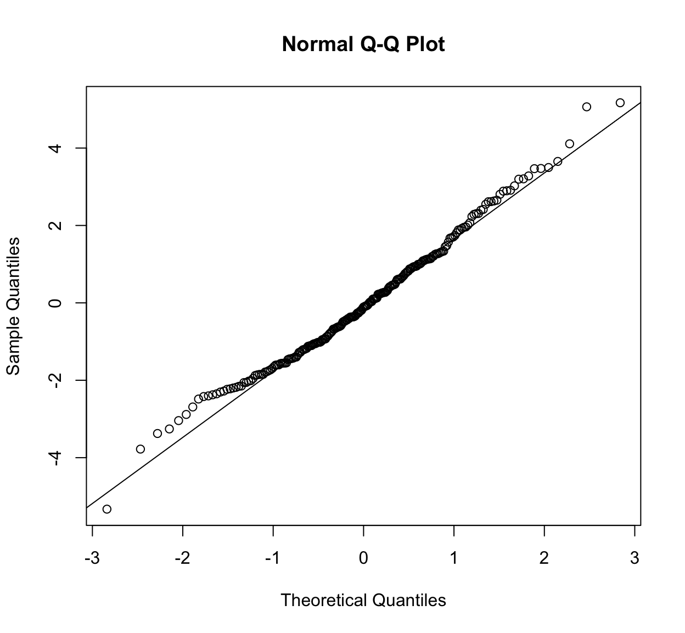
Thirdly, an assumption specific to mixed effects models is that the random effects are also normally distributed. Again we can use a qq plot to assess this and it looks good.
# normality of the random intercept estimates
qqnorm(ranef(model.rand.int)$`ID`[,1])
qqline(ranef(model.rand.int)$`ID`[,1])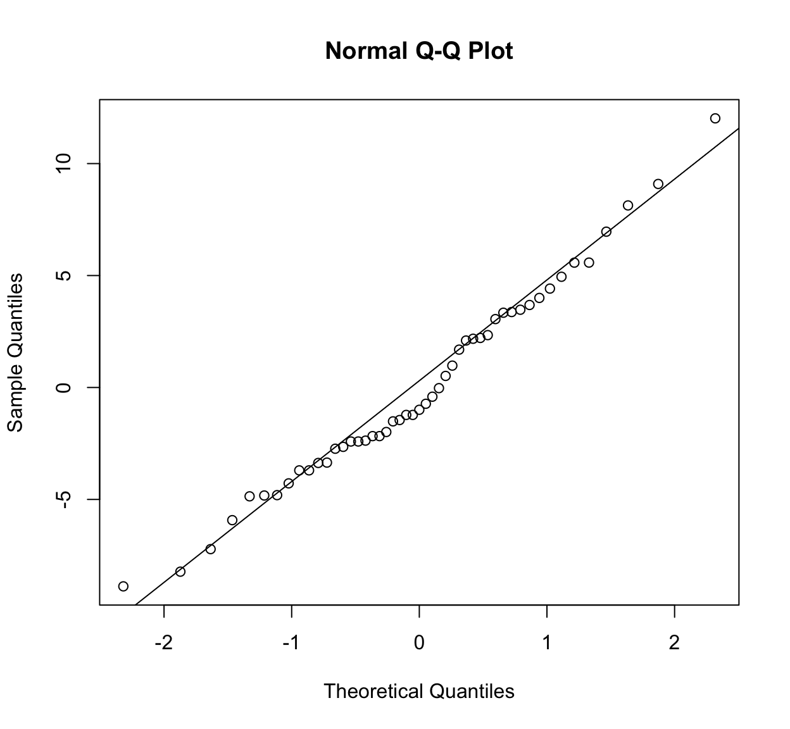
Adding random effects for regression coefficients (random slopes)
As well as individual specific intercepts, perhaps we also think that individuals will have a specific relationship between the predictor and outcome variables. We can incorporate this into our model by including a random slope as well as a random intercept. To do this we need to add more parameters to our random intercept model. The random slopes model takes the form:
\[y_{ij} = \beta_{0} + u_{0j} + (\beta_{1} + u_{1j})x_{ij} + \varepsilon_{ij}\]
where for observation i, in group j:
- \(y_{ij}\) represents the value for individual i in group j
- \(\beta_{0}\) is the overall mean
- \(u_{0j}\) is the difference between the group mean and the overall mean
- \(\beta_{1}\) is the mean slope coefficient (i.e. the effect on Y of a one unit increase in X)
- \(u_{1j}\) is the difference between the group slope coefficient and the overall mean slope coefficient
- \(\varepsilon_{ij}\) is the error for individual i in group j
As before the group level effects (both intercepts and slope coefficients) are assumed to come from a distribution. Specifically the normal distribution, with a mean of 0 and variance \(\Omega_{u}\), where \(\Omega_{u}\) is the variance covariance matrix of the group effects. The diagonal elements are the variance of the group intercepts and group slope coefficients, respectively and the off diagonal elements are the covariances between the group intercepts and group slope coefficients.
While we have only introduced one more coefficient to our equation we in fact have two more parameters to estimate, the variance of the group slope coefficients (\(\sigma_{u1}^2\)), and the covariance (\(\sigma_{u01}\)) between the group intercepts and group slope coefficients. So in total we have 6 regression parameters to estimate:
- two regression parameters for our fixed effects (\(\beta_{0}\), \(\beta_{1}\))
- four variances for the random effects (\(\sigma^{2}_{u0}\),\(\sigma^{2}_{u1}\),\(\sigma^{2}_{u01}\), \(\sigma^{2}_{\varepsilon}\)).
To specify a random slopes model in R, we use similar syntax as
before. Random effect terms are specified in (), with a
| separating the terms to add random effects for on the
left from the grouping variable on the right. We want to fit a random
intercept and random coefficient for VisitNum so the left
hand part of the argument becomes 1 + VisitNum.
model.rand.slope<-lmer(CognitionA ~ VisitNum + (1 + VisitNum| ID), data = cogDat)## boundary (singular) fit: see help('isSingular')summary(model.rand.slope)## Linear mixed model fit by REML. t-tests use Satterthwaite's method [
## lmerModLmerTest]
## Formula: CognitionA ~ VisitNum + (1 + VisitNum | ID)
## Data: cogDat
##
## REML criterion at convergence: 1067.1
##
## Scaled residuals:
## Min 1Q Median 3Q Max
## -2.84733 -0.63441 -0.03205 0.56317 2.75011
##
## Random effects:
## Groups Name Variance Std.Dev. Corr
## ID (Intercept) 26.48794 5.1466
## VisitNum 0.05031 0.2243 -1.00
## Residual 3.59776 1.8968
## Number of obs: 221, groups: ID, 49
##
## Fixed effects:
## Estimate Std. Error df t value Pr(>|t|)
## (Intercept) 22.49230 0.77705 46.34473 28.946 < 2e-16 ***
## VisitNum 0.30205 0.07946 102.79375 3.801 0.000244 ***
## ---
## Signif. codes: 0 '***' 0.001 '**' 0.01 '*' 0.05 '.' 0.1 ' ' 1
##
## Correlation of Fixed Effects:
## (Intr)
## VisitNum -0.629
## optimizer (nloptwrap) convergence code: 0 (OK)
## boundary (singular) fit: see help('isSingular')This time when we fit the model we can see that we get some output
printed to the console and that it is a “Warning” message, saying “Model
failed to converge”. It is essentially a caution applied to the result.
This is different to an error, whereby the function is prematurely
stopped due to some unexpected input or result. If you are executing
some R code as a script, then a warning will not cause the script to
stop, but an error will. We can see that despite the warning, the
lmer() command has completed and produced an output by the
fact that we are able to call summary() on the fitted lmer
object. However, the fact that there was a warning, means we should
treat this result with some caution.
The output from the random slopes model is very similar to that from
the random intercepts model. The difference is that under the
Random effects section, there is an extra row for the
random slope, and an extra column for the estimated covariance. We
interpret and do hypothesis testing of the fixed effects as we did
before. Again in this example, Visit Number is significantly positively
correlated with the performance in cognitive test A. More than that the
values of fixed effect coefficients are very similar.
If we look at the estimated parameters for the random effects provided in the summary output we can see that the estimated variance for the random intercepts is 26.5 and the variance for the random slopes is 0.0503. While the magnitude of these is quite dramatically different, their values are relative to the values of the coefficients. We can also see that the correlation between an individual’s random intercept and random slope is -1, indicating that individuals with larger intercepts have smaller slopes. In other words, individuals who have higher baseline cognitive scores, have smaller changes in cognition across the course of the study.
To formally test whether the random slopes for VisitNum
improve the fit of the model we can use the likelihood ratio test
through the anova() function. Specifically we want to
compare our random slopes model with the random intercepts model which
we fitted earlier. Hence we can just run the command
anova(model.rand.int, model.rand.slope)## refitting model(s) with ML (instead of REML)This test returns a p-value > 0.05, indicating that the data are consistent with the random slopes having no variance and therefore do not offer an improvement to the model. In this situation, the random slopes model is unnecessarily complex and we can revert to a simpler model.
Exercise 2
Let’s try fitting some random slopes models.
Write the R code required,to test using a mixed effects regression model, the following:
- Are there individual specific associations exist between cognitive test B and visit number?
- Are there individual specific associations exist between cognitive test C and visit number?
model1b<-lmer(CognitionB ~ VisitNum + (1 + VisitNum | ID), data = cogDat)
summary(model1b)
anova(model1b, model1)
model2b<-lmer(CognitionC ~ VisitNum + (1 + VisitNum | ID), data = cogDat)
summary(model2b)
anova(model2b, model2)Graphical representation of random slopes
As with the random intercepts model, we can extract the model parameters to plot the lines for each individual. This time as we have a random intercept and a random slope for individual both intercept and slope coefficient will vary for each individual:
lapply(coef(model.rand.slope), head)## $ID
## (Intercept) VisitNum
## X10130 23.54226 0.2562866
## X10478 13.64277 0.6877311
## X10622 16.95754 0.5432654
## X10933 21.32263 0.3530236
## X11684 19.51072 0.4319916
## X12621 19.85164 0.4171330Recall that the individual level intercepts are calculated as the overall mean intercept estimate (22.4923041) added to the estimated individual specific effects. The individual level slope coefficients are caluclated int he same way as the overall mean slope estimate (0.3020465) added to the estimated individual slope effect effects. From this output we can make individual level predictions for the individuals in our observed data, which doesn’t have much meaning for individuals not in our study. We can use the overall mean effect from the fixed effect terms to make predictions for individuals not in our sample.
With these coefficients we can visualise the results
par(mar = c(4,4,1,1))
# extract model coefficients
ind.effects <- coef(model.rand.slope)$ID
mean.effects <- coef(summary(model.rand.slope))[,"Estimate"]
# create x variable that covers visit numbers
x.sample <- as.matrix(c(0:9))
# predict outcome using individual level coefficients
y.ind <- ind.effects[,1]+ t(x.sample %*% t(as.matrix(ind.effects[,2])))
# predict outcome using overal mean effect coefficients
y.mean <- mean.effects[1] + x.sample * mean.effects[2]
y_lim <-range(y.ind)
plot(x.sample, y.mean, ylim = y_lim, xlab = "Visit Number", ylab = "Cognitive Score")
for(i in 1:nrow(y.ind)){
lines(x.sample, y.ind[i,], lty = 2, col = "grey")
}
lines(x.sample, y.mean, ylim = y_lim, xlab = "Visit Number", ylab = "Cognitive Score")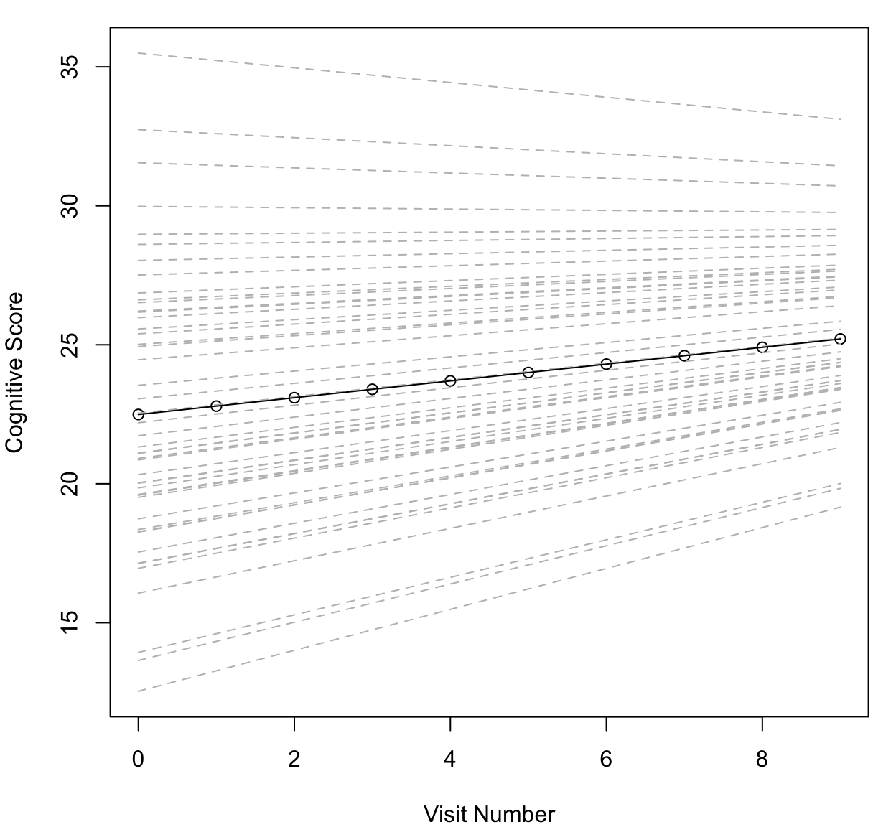
In this plot each dashed grey line represents an individual, while the black solid line represents the overall mean effect. What we can see is that each line starts at a different height on the y axis curtesy of the individual specific intercepts. As we saw from the coefficients, each individual has a different slope coefficient, so they are no longer parallel, howevere, that is not obvious to the human eye in this picture. In fact they are only very subtly different, and our significance testing informed us that there was at worst very little variance across individuals. So it is not surprising that we can’t see how this manifests in the data. The black line tells us about the average individual, and is what we would use to make predictions about an individual outside of this cohort and describe the effect.
Assumptions for random slopes model
Random slopes model have all the same assumptions as random intercepts model plus a few more.
- Linear relationship between predictors and outcomes.
- Constant variance across range of predictor variables (homoscedasticity).
- Errors at every level are normally distributed.
- The level 1 and level 2 residuals are uncorrelated.
- The errors at the highest level are uncorrelated.
- The slope residuals for two different groups are uncorrelated.
- The covariance between the intercept and the slope residual for the same group is \(\sigma_{u01}\).
- The intercept and slope residuals for different groups are uncorrelated.
- The slope residual is uncorrelated with the level 1 residual.
- The slope residual is uncorrelated with the covariates.
If our results did suggest that the random slopes model had some value, we could repeat the diagnostic plots from before to check our model assumptions; this time thought we would need to add a fourth plot to check the residuals of the random slope term we estimate for each individual.
# a plot to check the constant standard deviation
plot(fitted(model.rand.slope),resid(model.rand.slope,type="pearson"),col="blue", xlab = "fitted", ylab = "residuals")
abline(h=0,lwd=2)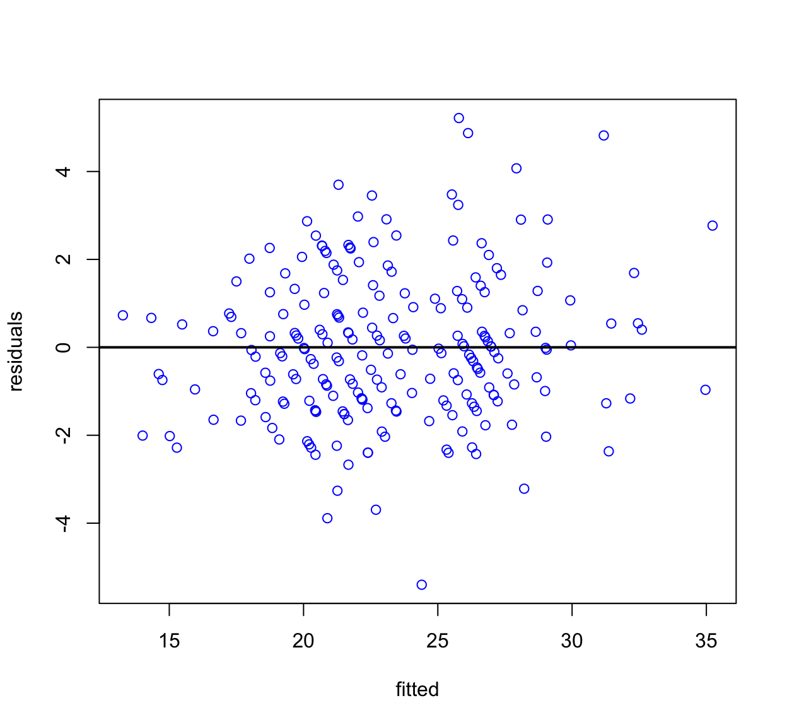
# normality of the residuals
qqnorm(resid(model.rand.slope))
qqline(resid(model.rand.slope))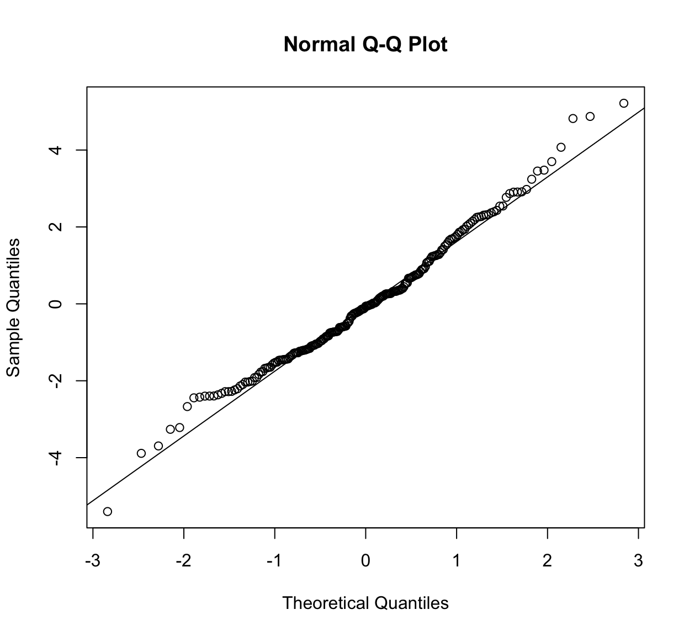
# normality of the random intercept estimates
qqnorm(ranef(model.rand.slope)$ID[,1])
qqline(ranef(model.rand.slope)$ID[,1])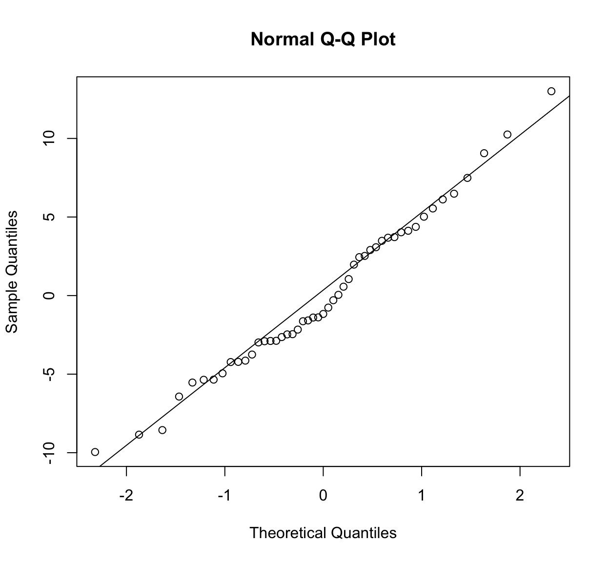
# normality of the random slope estimates
qqnorm(ranef(model.rand.slope)$ID[,2])
qqline(ranef(model.rand.slope)$ID[,2])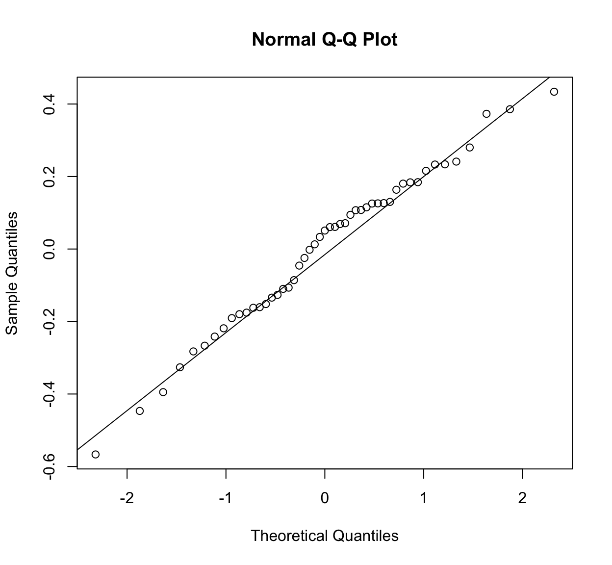
As with the random intercepts model these look pretty reasonable and no reason to believe the model is biased.
Some notes on model formulation
Once we start incorporating random slopes the interpretation of some predictor variables can get quite complicated. Some things to consider when deciding what model to fit:
- If we have a random slope, we don’t need to have a random intercept.
- We can have random slopes for continuous, categorical, non-linear or
interaction predictor variables.
- Where we have multiple predictor variables, we don’t have to have random slopes for all the predictor variables - we can be selective in which relationships we think group level effects are relevant for.
Fixed effects vs random effects
When you have a categorical variable sometimes it can be hard to decide if it should be modeled as a fixed or random effect? This is arguably a subjective decision at times but a few things to consider are:
- How many groups?
- Lots of groups would add lots of variables, so maybe more efficient to estimate variance across effects
- Do categories have particular meaning?
- Can we reassign the ids and not affect the interpretation, if yes a random effect.
- Do we predict differences (potentially interesting) between the
categories?
- If yes, fixed effect
Random effects can be thought of as
- nuisance parameters - we need to model them but we don’t care about them (e.g. some artefact of data collection)
OR
- they may be of particular interest
In general, sample size is a bigger issue for mixed effects models compared to standard regression models, as data feature multiple levels. The level-2 sample size (i.e. number of groups) is the most important factor for determining whether the model will be afflicted by small sample issues.
Expanding the mixed effects model framework
So far we have considered a fairly simple regression model with one continuous predictor variable and one continuous outcome variable and fitting a straight line between these. This has enabled us to get to grips with the core concepts but regression can do so much more than this. It is an incredibly flexible framework that can handle
- different types of variables
- multiple variables
- different relationships between variables
We will now look at how we extend the methodology to allow more complex analysis designs. You should think of regression as a modular approach which you select the necessary components depending on the
- properties of the outcome variable(s)
- properties of the predictor variable(s)
- the relationship that you want to model between each predictor variable and outcome variable.
Basically anything you can do with a standard regression model you can do with a mixed effects model.
Including more predictor variables
We can easily incorporate more predictor variables as fixed effects
into our model. As with linear regression, we need to specify these in
the formula we provide to R. If in addition to VisitNum we
want to control for differences between males and females we can include
a fixed effect for sex.
model.sex<-lmer(CognitionA ~ VisitNum + Sex + (1 | ID), data = cogDat)
summary(model.sex)## Linear mixed model fit by REML. t-tests use Satterthwaite's method [
## lmerModLmerTest]
## Formula: CognitionA ~ VisitNum + Sex + (1 | ID)
## Data: cogDat
##
## REML criterion at convergence: 1069.1
##
## Scaled residuals:
## Min 1Q Median 3Q Max
## -2.7843 -0.6350 -0.0603 0.5630 2.7094
##
## Random effects:
## Groups Name Variance Std.Dev.
## ID (Intercept) 21.54 4.642
## Residual 3.67 1.916
## Number of obs: 221, groups: ID, 49
##
## Fixed effects:
## Estimate Std. Error df t value Pr(>|t|)
## (Intercept) 22.01904 1.08151 49.79549 20.360 < 2e-16 ***
## VisitNum 0.32697 0.07795 174.55972 4.195 4.34e-05 ***
## SexM 0.72542 1.38071 46.32715 0.525 0.602
## ---
## Signif. codes: 0 '***' 0.001 '**' 0.01 '*' 0.05 '.' 0.1 ' ' 1
##
## Correlation of Fixed Effects:
## (Intr) VistNm
## VisitNum -0.185
## SexM -0.753 -0.020We can see that the fixed effect we have estimated for sex is not significant.
Logistic mixed effects regression models
If our outcome is a binary variable we alternatively need to fit a
logistic regression model. For an explanation as to why, please see the
Introduction to Regression Analysis tutorial. As
logistic regression requires a generalized linear model framework, we
need to use the function glmer() rather than
lmer().
Let’s look to see if in general the participants mental well being
improves as the study progresses. The variable that captures change over
the course of the study is VisitNum so this is our
predictor variable, we keep our random effect for ID and
our outcome variable is the factor MentalWellbeing
model.log <- glmer(MentalWellbeing ~ VisitNum + (1 | ID), data = cogDat, family="binomial")
summary(model.log)## Generalized linear mixed model fit by maximum likelihood (Laplace
## Approximation) [glmerMod]
## Family: binomial ( logit )
## Formula: MentalWellbeing ~ VisitNum + (1 | ID)
## Data: cogDat
##
## AIC BIC logLik deviance df.resid
## 293.3 307.1 -143.7 287.3 738
##
## Scaled residuals:
## Min 1Q Median 3Q Max
## -4.1703 -0.0046 -0.0022 0.0211 1.6176
##
## Random effects:
## Groups Name Variance Std.Dev.
## ID (Intercept) 532.9 23.08
## Number of obs: 741, groups: ID, 175
##
## Fixed effects:
## Estimate Std. Error z value Pr(>|z|)
## (Intercept) -9.1977 0.9750 -9.433 < 2e-16 ***
## VisitNum -0.7555 0.2183 -3.461 0.000539 ***
## ---
## Signif. codes: 0 '***' 0.001 '**' 0.01 '*' 0.05 '.' 0.1 ' ' 1
##
## Correlation of Fixed Effects:
## (Intr)
## VisitNum -0.236Let’s see if we need the random intercept which is essentially asking the question whether an individuals well being at one point in the study predicts their well being at another stage. It is important to do this for each model, because just because individual has an affect on one variable, doesn’t automatically mean it affects all variables in a data set.
As before we do this my comparing it to a standard regression model
with just fixed effects and no random effects. As the standard model
also needs to be a logistic regression model we use the
glm() function to fit it. We then use an
anova() to compare the models with and without the random
effects.
null.log <- glm(MentalWellbeing ~ VisitNum, data = cogDat, family="binomial")
anova(model.log, null.log)These results show that the inclusion of the random intercept does significantly improve the fit of the model as P < 0.05. Therefore we can conclude that individual’s mental well being is correlated across the course of the study.
We interpret the fixed effects as we would for any other logistic regression model - they relate to the log odds ratio of the outcome per one unit increase in the predictor variable. As a one unit increase in the predictor variable equates to one extra visit, we can summarise from this model that each extra visit is associated with a log odd ratio of -0.76. We can convert this to an odds ratio by raising it to an exponential.
exp(coef(summary(model.log))[,"Estimate"])## (Intercept) VisitNum
## 0.0001012763 0.4697890924So the odds of having low mental well being relative to high mental well being decreases by a factor of 0.47 for each extra visit. We can flip this round and say that each visit increases the odds of having high mental well being by a factor of 2.1. Note that the individual level intercepts represent each individuals baseline odds ratio for their mental well being.
Exercise 3
Let’s practise fitting more complex mixed effects models
Write the R code required to test using a mixed effects regression model the following. For eachmodel include a random intercept for individual.
- Is cognitive performance measured by any of the three tests influenced by smoking or years of education?
model.coga<-lmer(CognitionA ~ VisitNum + ... + (1|ID), data = cogDat)
model.cogb<-
model.cogc<-model.coga<-lmer(CognitionA ~ VisitNum + Smoker + YearsEducation + (1|ID), data = cogDat)
summary(model.coga)
model.cogb<-lmer(CognitionB ~ VisitNum + Smoker + YearsEducation + (1|ID), data = cogDat)
summary(model.cogb)
model.cogc<-lmer(CognitionC ~ VisitNum + Smoker + YearsEducation + (1|ID), data = cogDat)
summary(model.cogc)- Does cognitive performance in any of the three tests influence the mental well being of the participants? Include co-variates for sex and years of education.
model.mw.coga<-glmer(MentalWellebing ~ CognitionA + VisitNum + ... + (1|ID), data = cogDat)
model.mw.cogb<-
model.mw.cogc<-model.mw.coga<-glmer(MentalWellbeing ~ CognitionA + VisitNum + Sex + YearsEducation + (1|ID), data = cogDat, family = "binomial")
summary(model.mw.coga)
model.mw.cogb<-glmer(MentalWellbeing ~ CognitionB + VisitNum + Sex + YearsEducation + (1|ID), data = cogDat, family = "binomial")
summary(model.mw.cogb)
model.mw.cogc<-glmer(MentalWellbeing ~ CognitionC + VisitNum + Sex + YearsEducation + (1|ID), data = cogDat, family = "binomial")
summary(model.mw.cogc)
## alternatively we could test simultaneously but fails to converge
model.mw.cogall<-glmer(MentalWellbeing ~ CognitionA + CognitionB + CognitionC + VisitNum + Sex + YearsEducation + (1|ID), data = cogDat, family = "binomial")
summary(model.mw.cogall)- Does physical well being improve over the course of the study?
model.pw<-glmer(PhysicalWellbeing ~ VisitNum +(1|ID), data = cogDat, family = "binomial")
summary(model.pw)Regression models with interaction terms
Regression allows us to explore complex relationships between more than two variables. Next, we are going to look at how to model these. Let’s assume we have two variables, height and weight, and we are interesting in how their relationship is affected by sex. We could split our data in two subsets, one for males and one for females and fit two separate regression models. With those results we could then compare the estimated parameters. It can be really tempting to compare if coefficients for height on weight are both significant or not. This can be a trap though, as significance is influenced not just by whether there is an effect but also the variation in the sample, the size of the effect and the size of the data set. If you have different numbers of males and females, it could just be that you have power to detect an effect in one sex and not the other. So it’s very easy to come to an incorrect conclusion from this approach. Instead you could compare the estimated regression parameters, but they will inevitably be different due to sampling variation, even if they should be the same. So how do you decide if they are different enough to be interesting? Ideally we want to do a statistical test to quantify is there is evidence of a difference. To do that we need to include both groups in the same regression model.
Interaction terms in regression models allow us to explore whether the relationship between two predictor variables depends on the value of a third variable. They are particularly useful when we suspect that the effect of one predictor on the outcome variable might vary depending on the level of another predictor.
When we include co-variates in regression models we assume they have a (fixed) additive effect that represents the effect of all the samples in our data set.
Let’s explore this for our height and weight example with the following regression model:
\[weight = \beta_{0} + \beta_{1} height + \beta_{2} sex\] where for females, sex = 0 and for males, sex = 1.
If we want to make predictions for females (i.e. when sex = 0), the equation becomes:
\[weight = \beta_{0} + \beta_{1} height + \beta_{2} 0 = \beta_{0} + \beta_{1} height\]
The relationship between height and weight is captured by \(\beta_{1}\)
If we want to make predictions for males (i.e. when sex = 1), the equation becomes:
\[weight = \beta_{0} + \beta_{1} height + \beta_{2} 1 = \beta_{0} + \beta_{1} height + \beta_{2}\]
While the intercept differs, the relationship between height and weight is only captured by \(\beta_{1}\). If we want to allow for sex specific effects, we need the slope to be captured by parameters that depend on sex. This what an interaction term does - by multiplying two or more predictor variables together to investigate whether their joint effect on the outcome is different from what would be expected if their effects were independent of each other. Of course with an extra term in the model we have an extra parameter.
\[weight = \beta_{0} + \beta_{1} height + \beta_{2} sex + \beta_{3} height * sex\]
If we repeat what we did before and deduce the formula for the predictions for a female and male, we can see how this works.
To predict weight for a female (i.e. \(sex = 0\))
\[weight = \beta_{0} + \beta_{1} height + \beta_{2} 0 + \beta_{3} height * 0 = \beta_{0} + \beta_{1} height\]
To predict weight for a male (i.e. \(sex = 1\))
\[weight = \beta_{0} + \beta_{1} height + \beta_{2} 1 + \beta_{3} height * 1 \\ = \beta_{0} + \beta_{1} height + \beta_{2} + \beta_{3} height = (\beta_{0} + \beta_{2}) + (\beta_{1} + \beta_{3})height\]
We can see the differences more closely in the table below:
| Sex | Intercept | Slope coefficient |
|---|---|---|
| female | \(\beta_{0}\) | \(\beta_{1}\) |
| male | \(\beta_{0} + \beta_{2}\) | \(\beta_{1} + \beta_{3}\) |
We still have the sex specific intercepts, but this time we additionally have a sex specific slope parameter for height, with \(\beta_{3}\) capturing the additional effect.
Fitting interaction models in R
We are going to look at how to code an interaction term in R by
extending the mixed effects models we fitted earlier. Earlier we fitted
a model to see whether cognition changed over the course of the study.
Next we will test to see if this effect is consistent between females
and males. To quantify that we will add an interaction term between
VisitNum and Sex.
model.int<-lmer(CognitionB ~ VisitNum + Sex + VisitNum*Sex + (1|ID), dat = cogDat)
summary(model.int)## Linear mixed model fit by REML. t-tests use Satterthwaite's method [
## lmerModLmerTest]
## Formula: CognitionB ~ VisitNum + Sex + VisitNum * Sex + (1 | ID)
## Data: cogDat
##
## REML criterion at convergence: 2844
##
## Scaled residuals:
## Min 1Q Median 3Q Max
## -2.4690 -0.5628 0.0042 0.5436 3.4740
##
## Random effects:
## Groups Name Variance Std.Dev.
## ID (Intercept) 17.7466 4.2127
## Residual 0.9979 0.9989
## Number of obs: 741, groups: ID, 175
##
## Fixed effects:
## Estimate Std. Error df t value Pr(>|t|)
## (Intercept) 7.77558 0.53938 184.19806 14.416 < 2e-16 ***
## VisitNum 0.16915 0.03550 569.75126 4.765 2.4e-06 ***
## SexM 0.10919 0.67801 185.00481 0.161 0.872237
## VisitNum:SexM -0.17610 0.04641 570.03850 -3.795 0.000164 ***
## ---
## Signif. codes: 0 '***' 0.001 '**' 0.01 '*' 0.05 '.' 0.1 ' ' 1
##
## Correlation of Fixed Effects:
## (Intr) VistNm SexM
## VisitNum -0.179
## SexM -0.796 0.142
## VisitNm:SxM 0.137 -0.765 -0.182From the output above we can see that we have four regression
coefficients (one per row) for our fixed effects. If we apply a p-value
threshold of 0.05, we would conclude that VisitNum has a
significant effect on cognitive performance, but sex does not. The
bottom row contains the result for the interaction, and as with the main
effect for sex, we can see that R has appended the name of the contrast
category to the name of the interaction. We can see that the interaction
is significant with a P-value of 1.64^{-4}. The estimated regression
coefficient is -0.176 which represents the change in the VisitNum slope
parameter for males relative to females.
Graphical representation of an interaction effect
Let’s look at a visualisation of these two sex specific regression models, where we will plot two lines one for females and one for males.
fixed.means<-coef(summary(model.int))[,"Estimate"]
x.sample<-c(0:9)
# mean female effect
y.female <- fixed.means[1] + x.sample * fixed.means[2]
# mean male effect
y.male <- fixed.means[1] + fixed.means[3] + x.sample * (fixed.means[2] + fixed.means[4])
par(mar = c(4,4,0.5,0.5))
plot(cogDat$VisitNum, cogDat$CognitionB, pch = 16, col = c("magenta", "blue")[cogDat$Sex], xlab = "VisitNum", ylab = "Cognition")
legend("topright", pch = 16, col = c("magenta", "blue"), levels(cogDat$Sex))
lines(x.sample, y.male, col = "blue")
lines(x.sample, y.female, col = "magenta")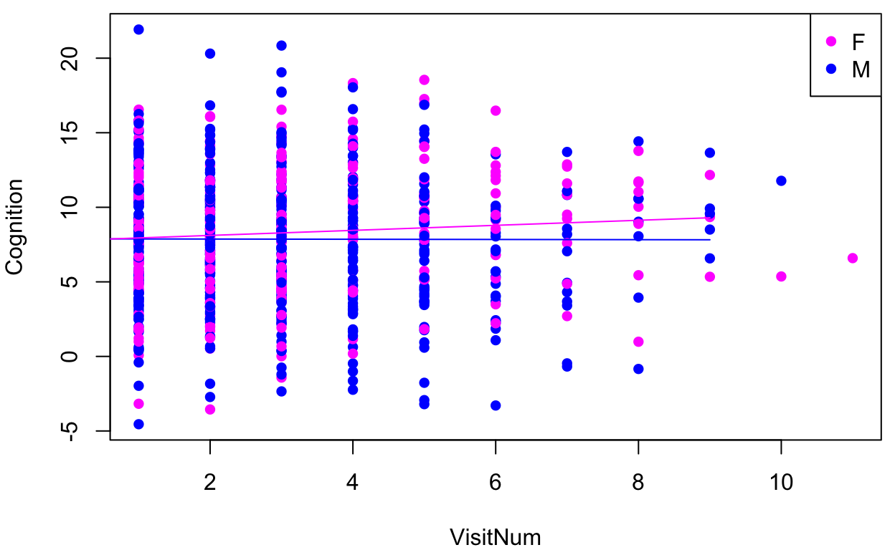
We can see in the scatterplot that the male and female mean lines start at approximately the same place on the y-axis. This fits with the sex main effect not being significant and that there is no difference at baseline in cognitive scores. What we can also see is that the mean performance of the course of the study differs. Specifically, females scores improve at a faster rate as the pink line is steeper. While the graph is helpful to visualise this, we can also draw these conclusions by calculating the values of the intercept and slope coefficients for each sex from the regression parameters. These values are included in the table below.
| Sex | Intercept | Slope coefficient |
|---|---|---|
| female | 7.8 | 0.17 |
| male | 7.9 | -0.0069 |
From the table we can see that the effect is males is accuately slightly negative, which was hard to see in the figure.
Exercise 4
Let’s practise fitting models with interaction terms
Write the R code required to test using a mixed effects regression model the following. For each model include a random intercept for individual.
- Is the change in cognitive performance across the study influence by the intervention group? Test each cognitive score in turn.
model.int.coga<-lmer(CognitionA ~ VisitNum + ... + (1|ID), data = cogDat)
model.int.cogb<-
model.int.cogc<-model.int.coga<-lmer(CognitionA ~ VisitNum + Intervention + VisitNum*Intervention + (1|ID), data = cogDat)
summary(model.int.coga)
model.int.cogb<-lmer(CognitionB ~ VisitNum + Intervention + VisitNum*Intervention + (1|ID), data = cogDat)
summary(model.int.cogb)
model.int.cogc<-lmer(CognitionC ~ VisitNum + Intervention + VisitNum*Intervention + (1|ID), data = cogDat)
summary(model.int.cogc)Some notes on interpretation of interaction effects
While a significant interaction is determined solely by looking at the p-value for teh interaction term, its interpretation depends on the value of the main effect. When we report that there is a difference between two groups, this could manifest in a number of ways. The interaction term has to be flexible enough to detect all of these. Below we plot a few examples.
Let’s consider the model:
\[y = \beta_{0} + \beta_{1} x + \beta_{2} sex + \beta_{3} * x * sex\]
where for females, \(sex = 0\) and for males, \(sex = 1\)
Let’s consider a simple example, where there is an effect in only one sex.
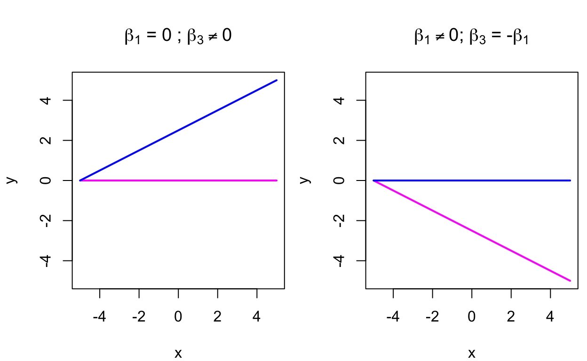
Above, in the figure on the left, there is no relationship between x and y in females, hence a flat line but there is an effect in males. This would mean that the main effect for x captured by \(\beta_{1}\) has to equal to zero and not significant. The significant effect between x and y in males only would be captured by a significantly non-zero, \(\beta_{3}\).
In the figure on the right, there is an effect in females but not males. As the slope coefficient for females is solely determined by \(\beta_{1}\) this has to be significantly non-zero. There is a significant difference between the sexes so the interaction coefficient \(\beta_3\) is significant. However, for males to have essentially a null effect, \(\beta_{3}\) has to be equal and opposite to \(\beta_{1}\) so that the combined effect on x equals 0. In this situation the sign of the interaction regression coefficient will be misleading as to the direction of the association for the contrast group.
This might be easier to understand using the table below. For there to be no effect in females \(\beta_{1} = 0\), whereas for there to be no effect in males \(\beta_{1} + \beta_{3} = 0\).
| Sex | Intercept | Slope coefficient |
|---|---|---|
| female | \(\beta_{0}\) | \(\beta_{1}\) |
| male | \(\beta_{0} + \beta_{2}\) | \(\beta_{1} + \beta_{3}\) |
This however is not the only two possible ways that the groups could differ. It may also be that there is an effect in both sexes but that it is of different orders of magnitude.
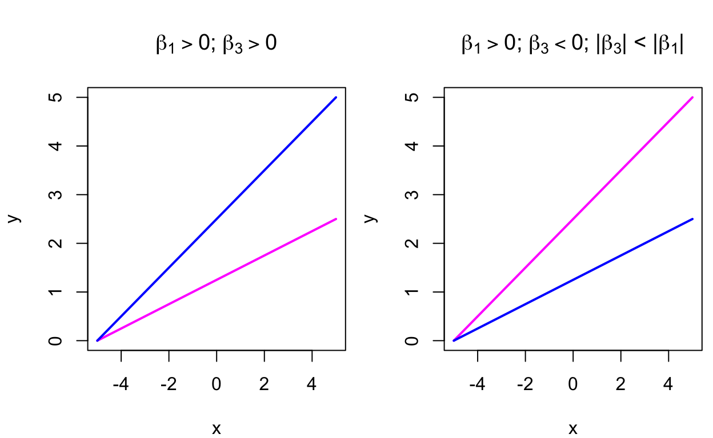
The example on the left of the figure above, the relationship is in the same direction, y increases as x increase, but males increase more quickly. Therefore both \(\beta_{1}\) and \(\beta_{3}\) are significantly non-zero and have the same sign, as \(\beta_{1} + \beta_{3} > \beta_{1}\).
If instead, females increased more quickly than males (shown in the right panel above), \(\beta{1}\) is positive but \(\beta_{3}\) needs to be negative, but importantly of smaller magnitude than \(\beta_{1}\) so that when they are added together the sum is still positive.

As a final example we have the most extreme difference, where males and females are both significantly associated, but in opposite directions. \(\beta_{1}\) is non-zero to estimate the effect in females, but \(\beta_{3}\) is the opposite direction, and of larger magnitude than \(\beta_{3}\) so that when they are summed together to give the effect in males, the slope coefficient changes sign. Here the difference between the slope coefficients for males and females is biggest, therefore this behaviour is the one we are most powered to detect. The trickiest situation to detect is subtle differences in magnitude as \(\beta_{3}\) is the smallest.
The main take home messgae here is that the value of the regression coefficient tells us nothing unless we also consider the regression coefficient for the main effect.
Summary
In this session we have covered a number of concepts:
- An overview of multi-level models
- How to fit a multi level model in R
- What the regression coefficients represent in a multi-level model
We have also covered the role of interaction terms in regression analysis and how to code them.
Extras
R coding conventions for interactions
In fact we can write this code more compactly, as R will
automatically include the main effects for the two variables as well as
the interaction, if we use the * to denote which variables
we want to model an interaction for. For example, we obtain the same
output with the more compact coding here:
model.int<-lm(CognitionB ~ VisitNum*Sex, dat = cogDat)
summary(model.int)##
## Call:
## lm(formula = CognitionB ~ VisitNum * Sex, data = cogDat)
##
## Residuals:
## Min 1Q Median 3Q Max
## -12.4919 -3.1475 0.1037 2.8973 13.9746
##
## Coefficients:
## Estimate Std. Error t value Pr(>|t|)
## (Intercept) 7.7108 0.4765 16.180 < 2e-16 ***
## VisitNum 0.2801 0.1259 2.225 0.02638 *
## SexM 0.3965 0.6128 0.647 0.51783
## VisitNum:SexM -0.4419 0.1658 -2.666 0.00785 **
## ---
## Signif. codes: 0 '***' 0.001 '**' 0.01 '*' 0.05 '.' 0.1 ' ' 1
##
## Residual standard error: 4.303 on 737 degrees of freedom
## Multiple R-squared: 0.02188, Adjusted R-squared: 0.01789
## F-statistic: 5.494 on 3 and 737 DF, p-value: 0.0009783If in fact, we want to include just the interaction without the main effect terms, we can use “:” instead.
For example:
model.int<-lm(CognitionB ~ VisitNum:Sex, dat = cogDat)
summary(model.int)Because we have omitted the main effect terms, we need two interaction terms to capture the sex specific effects (i.e. we need two regression coefficients to enable us to estimate a female-specific slope and a male-specific slope). When we have age as a main effect, the regression coefficient is equivalent to the “VisitNum:SexF” variable. As shown here
model.int<-lm(CognitionB ~ Sex + VisitNum:Sex, dat = cogDat)
summary(model.int)##
## Call:
## lm(formula = CognitionB ~ Sex + VisitNum:Sex, data = cogDat)
##
## Residuals:
## Min 1Q Median 3Q Max
## -12.4919 -3.1475 0.1037 2.8973 13.9746
##
## Coefficients:
## Estimate Std. Error t value Pr(>|t|)
## (Intercept) 7.7108 0.4765 16.180 <2e-16 ***
## SexM 0.3965 0.6128 0.647 0.5178
## SexF:VisitNum 0.2801 0.1259 2.225 0.0264 *
## SexM:VisitNum -0.1619 0.1079 -1.500 0.1340
## ---
## Signif. codes: 0 '***' 0.001 '**' 0.01 '*' 0.05 '.' 0.1 ' ' 1
##
## Residual standard error: 4.303 on 737 degrees of freedom
## Multiple R-squared: 0.02188, Adjusted R-squared: 0.01789
## F-statistic: 5.494 on 3 and 737 DF, p-value: 0.0009783In general though, it is advisable to have the main effects for each predictor variable as well as the interaction, to ensure that effects are correctly attributed to the right source.
More complex mixed effects models
Take a look at the lme4 vignette for more details on how to specify more complex mixed effect models with this package.
Also this post: https://rstudio-pubs-static.s3.amazonaws.com/63556_e35cc7e2dfb54a5bb551f3fa4b3ec4ae.html
Notes on REML here: http://users.stat.umn.edu/~gary/classes/5303/handouts/REML.pdf
A common error message when using lmer() is
Error in KhatriRao(sm, t(mm)) : (p <- ncol(X)) == ncol(Y) is not TRUE
If you get this error, try removing observations with missing data.
While lm() and glm() were good at
automatically handling the presence of these lmer throws an arguably
confusing error.